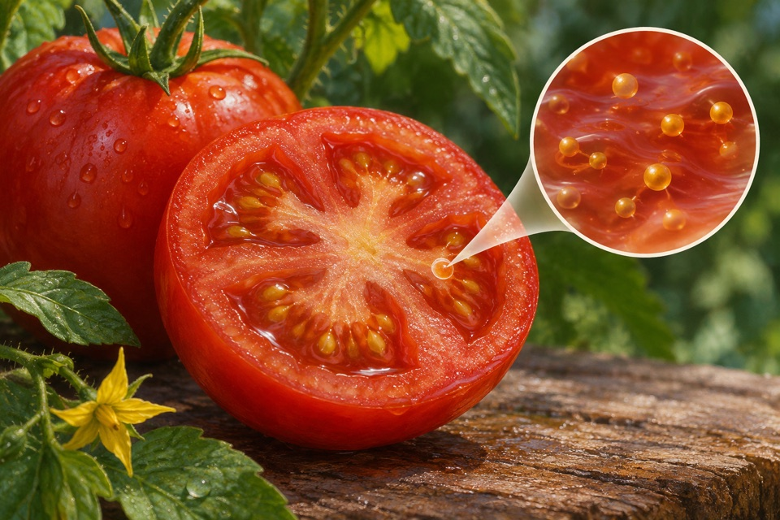
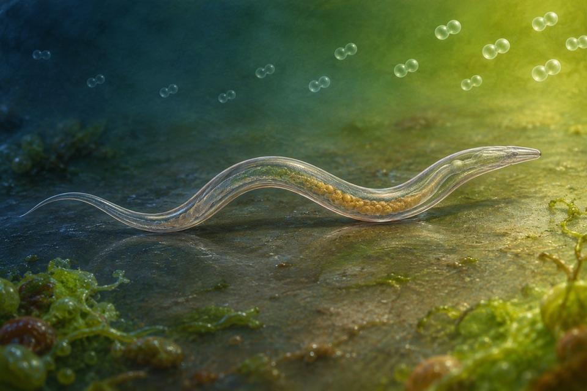
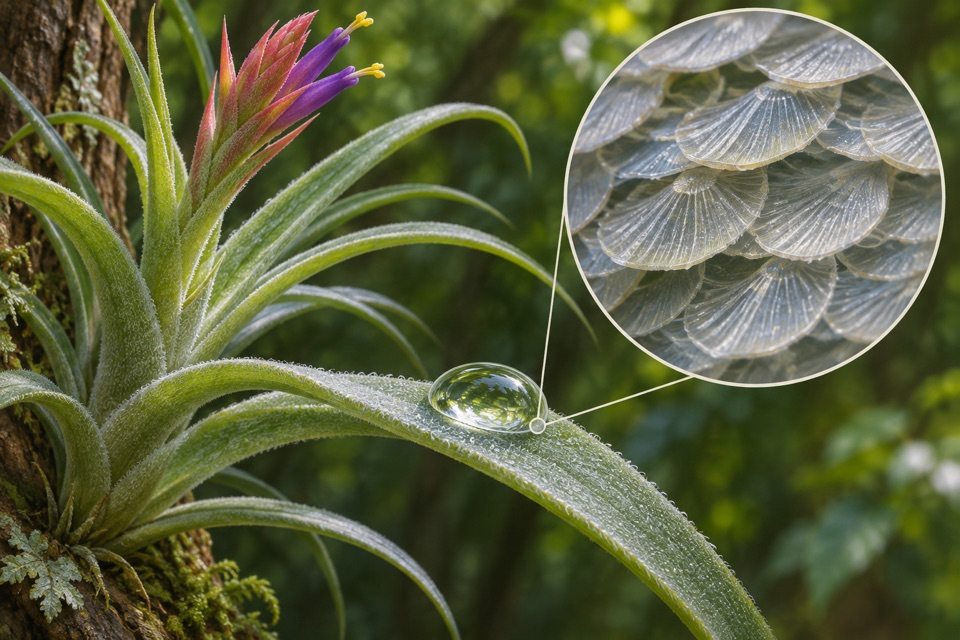

Module 01
Induced air-space formation in low-oxygen rice roots
Measure inducible cortical air-space area and distinguish it from the spaces already present in aerated roots.
Evidence recordOpen any of the ten modules to see the reported observation, its sources, and the research questions still open.
Measure inducible cortical air-space area and distinguish it from the spaces already present in aerated roots.
Evidence recordMeasure dihydroxyacetone production from glycerol and identify loss of activity as product accumulates.
Evidence record
Assess whether fruit GABA can increase while tracking fruit performance separately.
Evidence record
Measure occupancy and avoidance across a controlled oxygen gradient.
Evidence record
Measure water collected at the leaf surface separately from water entering leaf tissues.
Evidence recordRecover pyruvate formed from glucose and distinguish higher glycolytic flux from product yield.
Evidence record
Measure vitamin B6 vitamers in field-grown cassava storage roots.
Evidence recordMeasure neural activity across matched carbon dioxide exposures.
Evidence record
Measure the change in air-filled vessel volume and the proportion of vessels that complete refilling.
Evidence recordIdentify oxidized cello-oligosaccharides characteristic of oxidative cellulose cleavage.
Evidence record